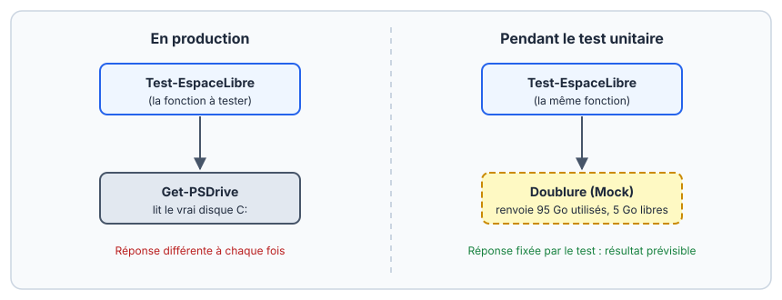

Les tests unitaires¶
Résumé
Un test unitaire vérifie, en quelques millisecondes, qu'un petit morceau de code fait exactement ce qu'on attend de lui. Cette partie explique le principe, le montre sur un exemple complet en Python avec pytest (avec les messages affichés quand un test réussit ou échoue), présente les doublures, la couverture de code et le TDD, puis applique tout cela à un script PowerShell avec Pester. Les lignes importantes du code sont expliquées : il n'est pas nécessaire de savoir programmer.
| Propriété | Valeur |
|---|---|
| Difficulté | Intermédiaire — lire un peu de code, sans avoir à en écrire |
| Durée estimée | 15 min de lecture et de questions |
| Version décrite | Python 3.12, pytest 9.2, PowerShell 7.4, Pester 6.2 |
| Place dans le parcours | Partie 2 sur 5 du parcours Les tests en informatique |
| Dernière mise à jour | 2026-11-25 |
1. Qu'est-ce qu'un test unitaire ?¶
Une unité est le plus petit morceau de code que l'on peut tester seul, le plus souvent une fonction : un bloc de code qui porte un nom, reçoit des valeurs (ses paramètres) et renvoie un résultat.
Un test unitaire est un petit programme qui appelle cette fonction avec des valeurs choisies et vérifie automatiquement le résultat. Il est écrit une fois, puis relancé à chaque modification. Comme sur une chaîne de montage, on contrôle chaque pièce avant de l'assembler.
Ses bénéfices : on trouve les défauts au plus tôt, on modifie sans peur (un test échoue dès qu'on casse quelque chose), le test documente le comportement attendu, et il s'automatise facilement (partie 5).
Un bon test unitaire est rapide, indépendant des autres tests, reproductible (même résultat partout, à toute heure) et auto-vérifiant (il dit lui-même « réussi » ou « échoué »). Pour cela, il ne touche à rien d'extérieur : ni disque, ni réseau, ni base de données, ni annuaire.
Presque tous les tests suivent le même plan en trois temps, appelé AAA en anglais (Arrange, Act, Assert) :
- Préparer : mettre en place les données d'entrée ;
- Agir : appeler la fonction testée ;
- Vérifier : comparer le résultat obtenu au résultat attendu. Cette vérification s'appelle une assertion.
Chaque langage a son framework de test, un outil prêt à l'emploi qui trouve les tests, les lance et affiche le bilan : pytest pour Python, Pester pour PowerShell, bats-core pour Bash, JUnit pour Java, xUnit ou NUnit pour .NET, Jest pour JavaScript. La plupart produisent un rapport au format JUnit XML, que les outils d'intégration continue comme Jenkins savent lire (partie 5).
2. Exemple complet avec pytest 🐍¶
2.1 Le code à tester¶
Un petit module Python (un fichier de code réutilisable), reseau.py, avec deux fonctions utiles à un administrateur réseau :
"""Petites fonctions utiles à un administrateur réseau."""
def est_ipv4_valide(adresse: str) -> bool:
"""Renvoie True si la chaîne est une adresse IPv4 écrite correctement."""
morceaux = adresse.split(".") # "192.168.19.55" -> ["192", "168", "19", "55"]
if len(morceaux) != 4: # il faut exactement 4 nombres
return False
for morceau in morceaux:
if not (morceau.isascii() and morceau.isdigit()): # uniquement des chiffres de 0 à 9
return False
if int(morceau) > 255: # chaque nombre entre 0 et 255
return False
return True
def nombre_hotes(prefixe: int) -> int:
"""Nombre d'adresses utilisables pour des machines dans un réseau /prefixe."""
if not 0 <= prefixe <= 32:
raise ValueError("Le préfixe doit être compris entre 0 et 32")
return 2 ** (32 - prefixe) - 2 # on retire l'adresse réseau et la diffusion
nombre_hotes(24) doit renvoyer 254 : un réseau /24 compte 256 adresses, moins l'adresse du réseau et l'adresse de diffusion. raise ValueError lève une erreur : la fonction refuse un préfixe impossible.
2.2 Les tests¶
Les tests sont dans un fichier à part, dont le nom commence par test_ : c'est ainsi que pytest les trouve.
import pytest
from reseau import est_ipv4_valide, nombre_hotes
def test_adresse_correcte_acceptee():
# Préparer : une adresse valide
adresse = "192.168.19.55"
# Agir : appeler la fonction testée
resultat = est_ipv4_valide(adresse)
# Vérifier : le résultat est celui attendu
assert resultat is True
def test_octet_trop_grand_refuse():
assert est_ipv4_valide("192.168.19.256") is False
def test_trois_octets_refuse():
assert est_ipv4_valide("10.0.1") is False
def test_lettres_refusees():
assert est_ipv4_valide("10.0.a.1") is False
@pytest.mark.parametrize("prefixe, attendu", [(24, 254), (30, 2), (16, 65534)])
def test_nombre_hotes(prefixe, attendu):
assert nombre_hotes(prefixe) == attendu
def test_prefixe_impossible_leve_une_erreur():
with pytest.raises(ValueError):
nombre_hotes(33)
- Chaque fonction
test_…est un test, dont le nom dit en français ce qu'il vérifie. assertsignifie « vérifier que » : si la condition est fausse, le test échoue.- On teste les cas valides, mais surtout les cas invalides (256, trois nombres, des lettres) : c'est là que se cachent les défauts.
@pytest.mark.parametrizelance le même test avec trois couples (préfixe, résultat attendu).pytest.raises(ValueError)vérifie que la fonction refuse bien un préfixe de 33.
2.3 Lancer les tests¶
🐧 pytest s'installe avec sudo apt install python3-pytest (Debian, Ubuntu) ou pip install pytest. Dans le dossier des deux fichiers, pytest -v (verbose, « bavard ») affiche une ligne par test :
collected 8 items
test_reseau.py::test_adresse_correcte_acceptee PASSED [ 12%]
test_reseau.py::test_octet_trop_grand_refuse PASSED [ 25%]
test_reseau.py::test_trois_octets_refuse PASSED [ 37%]
test_reseau.py::test_lettres_refusees PASSED [ 50%]
test_reseau.py::test_nombre_hotes[24-254] PASSED [ 62%]
test_reseau.py::test_nombre_hotes[30-2] PASSED [ 75%]
test_reseau.py::test_nombre_hotes[16-65534] PASSED [ 87%]
test_reseau.py::test_prefixe_impossible_leve_une_erreur PASSED [100%]
============================== 8 passed in 0.02s ===============================
Huit tests réussis (passed) en deux centièmes de seconde.
2.4 Quand un test échoue¶
Un préfixe /32 désigne une seule machine (c'est ce qu'on écrit dans une règle de pare-feu pour viser un hôte précis). Ajoutons ce cas :
test_reseau.py ........F [100%]
=================================== FAILURES ===================================
__________________ test_prefixe_32_designe_une_seule_machine ___________________
def test_prefixe_32_designe_une_seule_machine():
> assert nombre_hotes(32) == 1
E assert -1 == 1
E + where -1 = nombre_hotes(32)
test_reseau.py:38: AssertionError
========================= 1 failed, 8 passed in 0.03s ==========================
Le F signale l'échec (failed), la ligne > l'assertion en cause, et les lignes E l'explication : nombre_hotes(32) renvoie -1 au lieu de 1, car 2⁰ - 2 = -1. Le test a trouvé un vrai défaut : les cas /32 (une machine) et /31 (un lien point à point entre deux routeurs, dont les deux adresses sont utilisables selon la RFC 3021) ne sont pas gérés. On corrige en ajoutant, dans nombre_hotes, juste avant la dernière ligne :
if prefixe == 32:
return 1 # une seule machine (route d'hôte)
if prefixe == 31:
return 2 # lien point à point (RFC 3021)
return 2 ** (32 - prefixe) - 2
pytest affiche alors 9 passed. Le nouveau test reste dans le fichier : il empêchera ce défaut de revenir. Un défaut corrigé = un test ajouté.
3. Trois notions incontournables¶
3.1 Les doublures¶
Une doublure (test double), comme au cinéma, remplace un acteur réel pendant le test : un disque, un serveur, une base de données, l'annuaire, l'horloge. Un bouchon (stub) renvoie une réponse toute faite ; un simulacre (mock) renvoie une réponse toute faite et enregistre comment il a été appelé. Dans le langage courant, on dit souvent « mock » pour toutes les doublures. La section 4 en montre une.
3.2 La couverture de code¶
La couverture de code mesure la part du code exécutée au moins une fois par les tests. Sur l'exemple avant correction, l'extension pytest-cov affiche :
Ce tableau s'obtient avec l'extension pytest-cov (pip install pytest-cov), puis la commande pytest --cov=reseau --cov-report=term-missing.
100 % de couverture… et pourtant le défaut du /32 était là. La couverture dit quelles lignes ont été exécutées, pas si elles ont été vérifiées avec les bonnes valeurs. C'est un bon indicateur pour repérer le code jamais testé, pas une preuve de qualité. Il faut surtout tester les cas limites : valeurs vides, nulles, maximales, juste au-dessus et juste au-dessous des limites.
3.3 Le développement piloté par les tests (TDD)¶
Le TDD (Test-Driven Development) inverse l'ordre habituel : on écrit le test avant le code, en cycles de quelques minutes. 🔴 Rouge : écrire un test, qui échoue puisque le code n'existe pas. 🟢 Vert : écrire le code le plus simple qui le fait réussir. 🔵 Remanier : améliorer le code en gardant les tests au vert. On réfléchit ainsi au résultat attendu avant d'écrire la moindre ligne.
4. Tester un script PowerShell avec Pester 🪟¶
Pester est le framework de test libre de PowerShell ; une ancienne version est même livrée avec Windows. Voici une fonction qui vérifie qu'il reste assez d'espace libre sur un lecteur :
function Test-EspaceLibre {
param(
[string]$Lecteur,
[int]$SeuilPourcent = 10
)
$disque = Get-PSDrive -Name $Lecteur
$pourcentLibre = $disque.Free / ($disque.Used + $disque.Free) * 100
return $pourcentLibre -ge $SeuilPourcent
}
param(...) déclare ses deux paramètres : le lecteur, et le seuil (10 % par défaut). Elle lit le lecteur avec Get-PSDrive, calcule le pourcentage libre et renvoie $true s'il est supérieur ou égal (-ge) au seuil. Sur un vrai disque, l'espace libre change sans cesse : le test ne serait pas reproductible. On remplace donc Get-PSDrive par une doublure :

Pendant le test, la doublure remplace la vraie commande Get-PSDrive.
BeforeAll {
. $PSScriptRoot/EspaceDisque.ps1
}
Describe 'Test-EspaceLibre' {
It 'répond OK quand il reste 50 % du disque' {
Mock Get-PSDrive { [pscustomobject]@{ Used = 50GB; Free = 50GB } }
Test-EspaceLibre -Lecteur 'C' | Should -BeTrue
}
It 'donne l''alerte quand il reste 5 % du disque' {
Mock Get-PSDrive { [pscustomobject]@{ Used = 95GB; Free = 5GB } }
Test-EspaceLibre -Lecteur 'C' | Should -BeFalse
}
}
| Mot-clé | Rôle |
|---|---|
BeforeAll |
S'exécute avant tous les tests : ici, charge le script à tester (le point . en début de ligne exécute le script dans la session du test) |
Describe |
Un groupe de tests, souvent un par fonction |
It |
Un test, avec sa description en langage courant |
Mock |
Crée une doublure : pendant ce test, Get-PSDrive renvoie l'objet indiqué au lieu de lire le disque |
Should -BeTrue |
L'assertion : le résultat doit être vrai (-BeFalse : faux) |
On installe Pester depuis la PowerShell Gallery, le magasin officiel de modules, puis on lance les tests :
Install-Module Pester -Force -Scope CurrentUser
Invoke-Pester -Path .\EspaceDisque.Tests.ps1 -Output Detailed
Pester v6.2.0
Running tests from 1 files.
Running tests from '/src/EspaceDisque.Tests.ps1'
Describing Test-EspaceLibre
[+] répond OK quand il reste 50 % du disque 278ms
[+] donne l'alerte quand il reste 5 % du disque 20ms
Tests completed in 661ms
Tests Passed: 2, Failed: 0, Skipped: 0, Inconclusive: 0, NotRun: 0
Les deux tests réussissent ([+]) sans jamais lire le vrai disque.
Pester sur Windows PowerShell 5.1
Windows est livré avec la très ancienne version 3.4 de Pester, à la syntaxe différente. Pour installer la version récente, ajouter l'option -SkipPublisherCheck à Install-Module : les deux versions ne sont pas signées par le même certificat.
5. Questions de révision¶
- Retrouver les trois temps Préparer – Agir – Vérifier dans le test
test_adresse_correcte_acceptee. - Pourquoi un test unitaire ne doit-il pas lire le vrai disque ou interroger le vrai annuaire ? Que fait-on à la place ?
- Les tests couvraient 100 % du code de
reseau.py, et pourtant un défaut existait. Expliquer. - Dans Pester, à quoi servent
Describe,It,MocketShould?
Corrigé
- Préparer :
adresse = "192.168.19.55"; Agir :resultat = est_ipv4_valide(adresse); Vérifier :assert resultat is True. - Le test deviendrait lent et non reproductible (l'espace libre ou l'annuaire changent, le réseau peut être coupé), et il pourrait modifier des données réelles. On remplace ces dépendances par des doublures qui renvoient une réponse fixée par le test.
- La couverture indique que chaque ligne a été exécutée, pas qu'elle a été vérifiée avec toutes les valeurs utiles : aucun test n'utilisait la valeur limite 32.
Describeregroupe des tests,Itdéfinit un test,Mockremplace une commande par une doublure,Shouldest l'assertion.
Ressources¶
- Documentation de pytest (en anglais) — démarrage, assertions, tests paramétrés.
- Pester — Quick Start (en anglais) — installation et premiers tests PowerShell.
- Pester — Mocking (en anglais) — les doublures dans Pester.
- ShellCheck — analyse statique des scripts Bash.
Partie précédente : Comprendre les tests · Partie suivante : Tests de performance et de charge